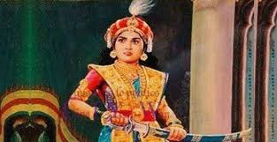
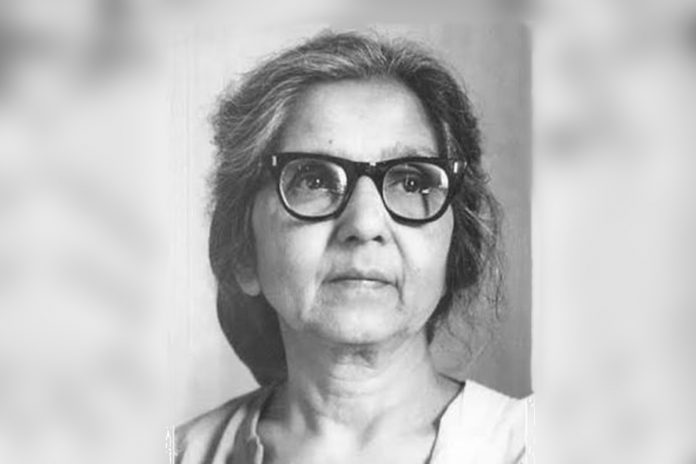
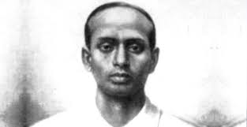

Unsung heroes during british raj

Aruna Asaf Ali
"
Aruna SAsaf Ali
Aruna Asaf Ali was an Indian independence activist.
She is widely remembered for hoisting the Indian National flag at the Gowalia Tank maidan in Bombay during
the Quit India Movement, 1942. After Independence, she remained active in politics, becoming Delhi's first mayor in 1958

Surya Sen
Surya Sen, also called Surjya Sen was an Indian revolutionary who was influential in the Indian independence movement
against British rule in India and is noted for leading the 1930 Chittagong armoury raid in Chittagong in British India.
Sen was a school teacher by profession and was popularly called as Master Da.
Matangini Hazra
Matangini Hazra was an Indian revolutionary who participated in the Indian independence movement
until she was shot dead by the British Indian police in front of the Tamluk Police Station on 29 September 1942.
She was affectionately known as Gandhi buri, Bengali for old lady